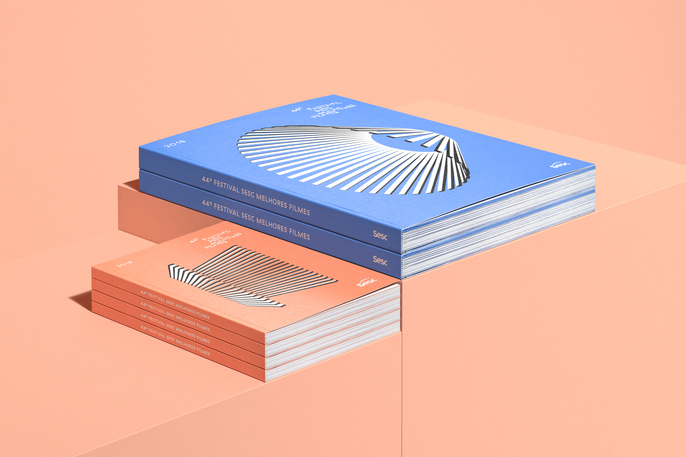
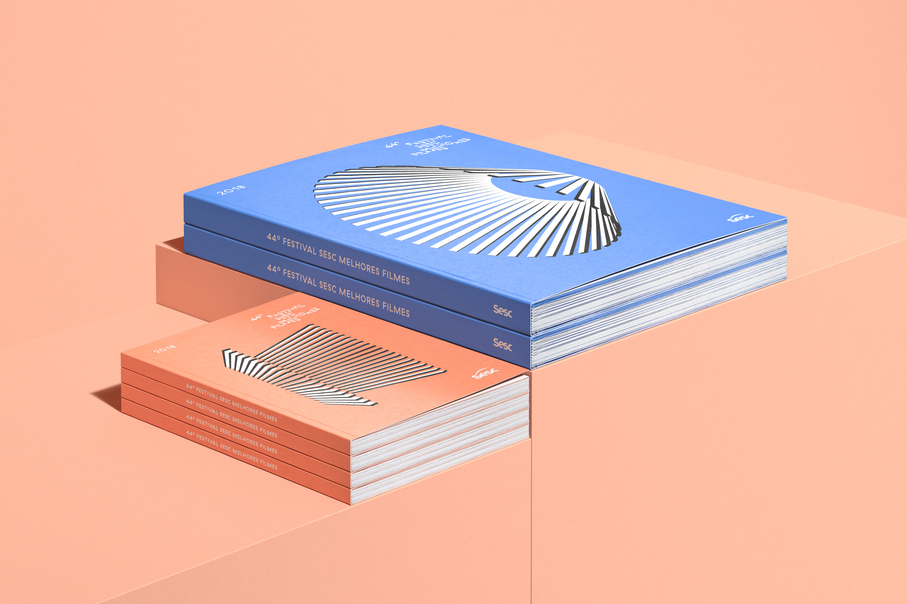
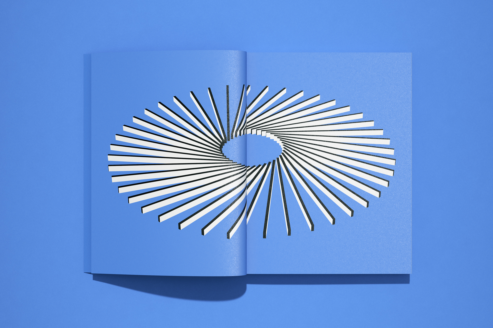
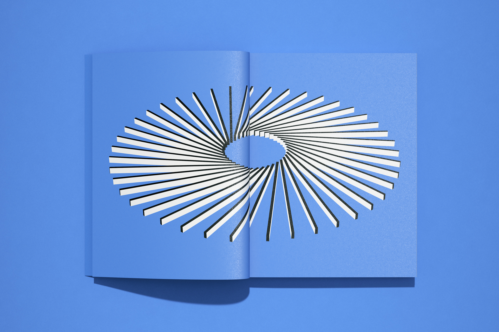

Sesc Melhores Filmes is São Paulo’s earliest and most traditional cinema festival, which early exhibits some of the greatest movies from the previous year to be seen or rewatched by the public. The movies are chosen by the public and a specialized panel, with critics and journalists from all over the country.
Our proposal plays with the idea of movies being composed by a multitude of parts, diversely arranged into an infinity of outcomes. We developed a set of shapes by combining the same 44 elements in different ways, conceptually playing with the multiplicity of the cinema universe — each film is unique and open to various interpretations. The compositions are also graphically linked to the festival’s logo, created in 2016 by Bloco Grafico. The identity was expressed in a catalog, a pocket schedule book, posters and other promotional pieces.
 



 
